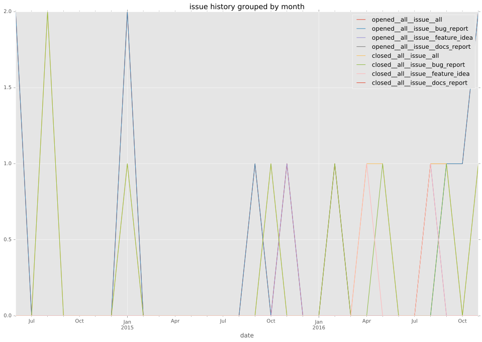
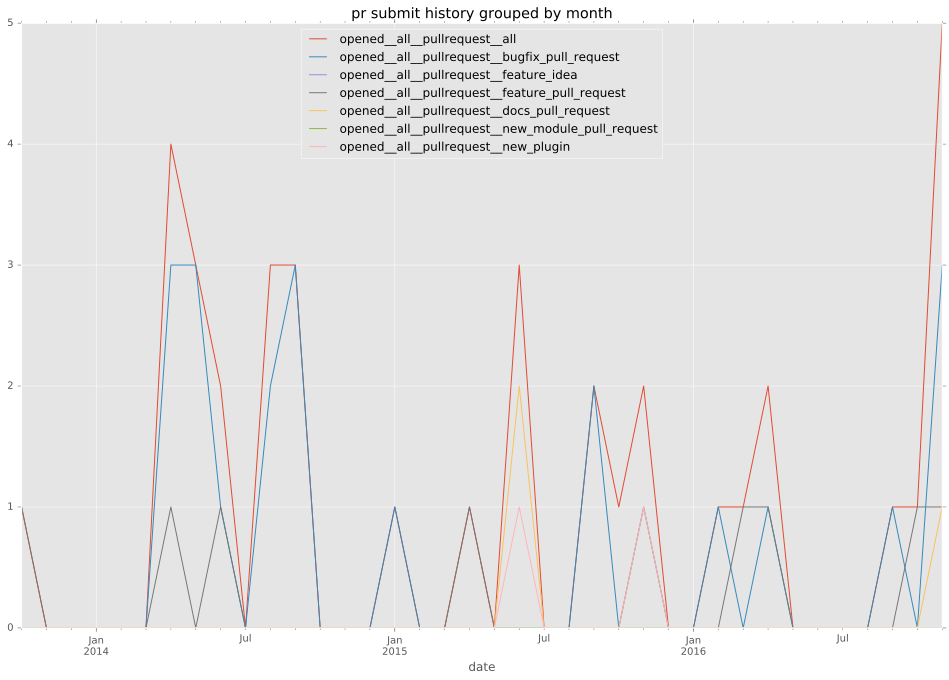

authors
- berendt
maintainers
- robinro
contributors
- berendt : 21 commits
- n0trax : 13 commits
- maedox : 3 commits
- abadger : 3 commits
- mpdehaan : 2 commits
- bcoca : 1 commits
total issue counts
unknown: 2
feature pull request: 6
pullrequest: 32
docs pull request: 2
bugfix pull request: 22
feature idea: 2
issue: 10
bug report: 8
issue history

pullrequest history


days open by issue type
bugfix pull request
count: 28
std: 84.1142143648
min: 0
max: 385
median: 7.0
mean: 46.6428571429
all
count: 51
std: 104.813417791
min: 0
max: 475
median: 8.0
mean: 61.2156862745
pullrequest
count: 0
std: nan
min: nan
max: nan
median: nan
mean: nan
docs pull request
count: 4
std: 0.0
min: 3
max: 3
median: 3.0
mean: 3.0
feature pull request
count: 8
std: 118.856380921
min: 8
max: 370
median: 113.5
mean: 129.375
feature idea
count: 2
std: 107.48023074
min: 0
max: 152
median: 76.0
mean: 76.0
issue
count: 0
std: nan
min: nan
max: nan
median: nan
mean: nan
bug report
count: 7
std: 172.311180302
min: 0
max: 475
median: 34.0
mean: 88.1428571429
closures grouped by total days open